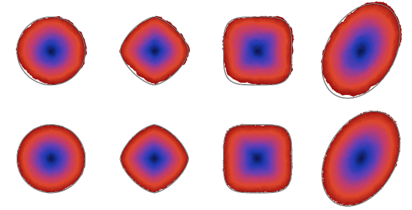
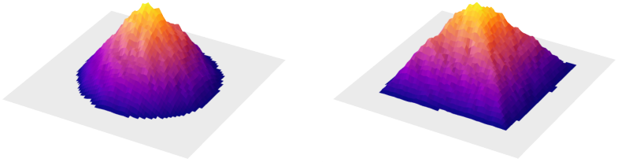

Every labeled theorem, lemma, proposition and corollary of the paper is formalized in Lean 4, building on Mathlib.
Abstract
A centrally excited random walk on ${\mathbb Z}^d$ moves like simple random walk, except that its first step from each site has a drift of fixed size toward the origin. Kozma (2007) conjectured that after $n$ steps the visited set approximates a ball with radius of order $n^{ 1/(d+1)}$. We prove this in every dimension $d\geq2$ and show that the rescaled numbers of visits converge uniformly to a cone, which is the potential generated by the drift on a ball. The same argument shows that a drift opposite to a subgradient of a norm produces the ball of that norm. In the plane, the outer and inner radii of the visited set differ by at most $ n^{1/6}$ times a power of $\log n$, and the exponent $1/6$ cannot be lowered.
Problem
A centrally excited random walk on Z^d moves like simple random walk, except that its first departure from each site has a drift of fixed size toward the origin. Kozma (2007) conjectured that its visited set after n steps approximates a ball of radius of order n^{1/(d+1)}.
Approach
Dynkin's formula expresses the local times as a potential generated by the drift minus a martingale, with bounds on the martingale bracket. A crossing argument against the drift then controls the outer radius, and potential estimates at contact points control the inner radius and volume. The argument extends to drifts opposite to subgradients of an arbitrary norm. All labeled results are formalized in Lean 4 on top of Mathlib.
Results
The conjecture is proved for all d≥2, and the rescaled local times converge uniformly to a cone. In the plane, the outer and inner radii differ by at most n^{1/6} times a power of log n, and the exponent 1/6 is sharp. Central limit theorems and laws of the iterated logarithm are also obtained.

Figure 2. Ranges r_{n}^{-1}A_{n} for the Euclidean, \ell^{3/2} , \ell^{4} and elliptical norms (left to right), at n=10^{9} . Top: d=2 , \kappa=0.4 ; bottom: x_{3}=0 sections for d=3 , \kappa=0.25 . The unit balls are outlined and the blue-to-red colors show (t_{x}/n)^{\nicefrac{{1}}{{(d+1)}}} , with t_{x} the first-departure time.

Figure 3. Local times \ell_{n}(x)/(2d\kappa r_{n}) over x/r_{n} for the Euclidean norm (left) and \ell^{\infty} (right): d=2 , n=10^{10} , \kappa=0.4 .